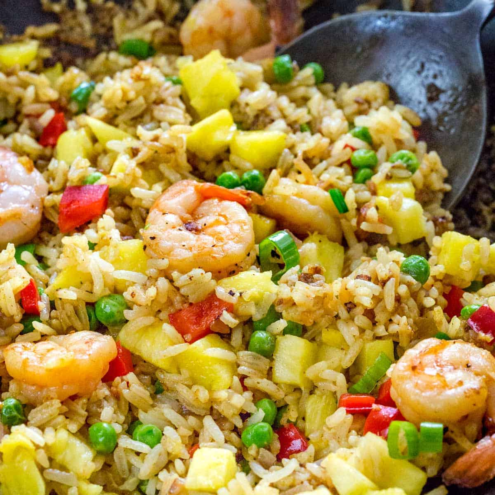

Pineapple fried rice is a great pineapple dish that combines sweet and savory flavors. It doesn't take too long to make but tastes fantastic! Some people serve pineapple fried rice in the pineapple skin of the pineapple used, which looks really cool. No matter how you serve it, it's a wonderful addition to your dinner table.